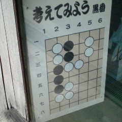

「考えてみよう」
という事で
方と円について
考察してみよう。
方（陰、黒番、黒地、黒星）
方陣
方形
平方
方向
方針
方丈
方術
方墳
方程式
直方体
魔方陣
方眼紙
正方形
長方形
品行方正
四方八方
八方塞がり
円（陽、白番、白地、白星）
円（まる）い
円（つぶ）ら
円（まど）か
円（まろ）やか
円陣
円熟
円満
円滑
円柱
円錐
円盤
円墳
円周率
円舞曲
楕円軌道
円卓会議
円月斬り